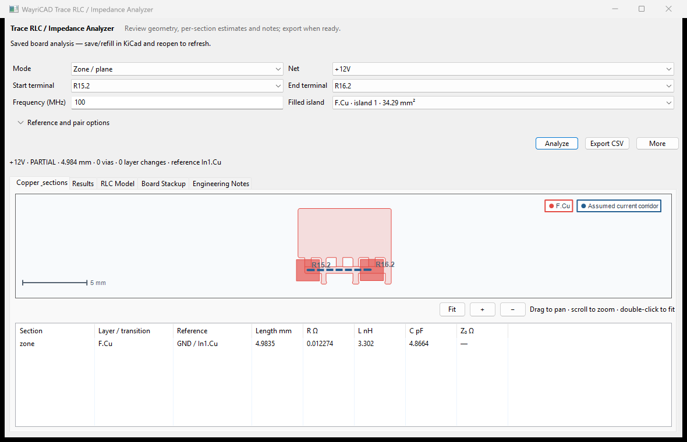
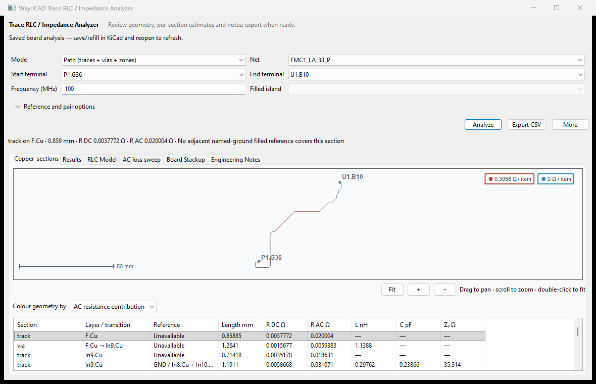
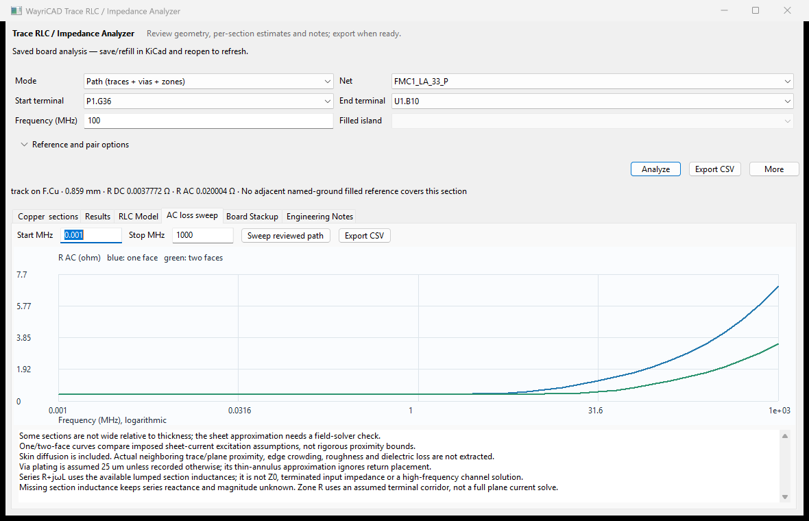

Choose a net and two terminals. Analyze a connected path or a filled zone, then inspect each section's geometry and reference.


Choose Zone/plane, a filled island and two terminals on that island's layer. Set the assumed current-corridor width under options. A corridor must fit inside the filled polygon, preserving holes and isolated islands. Complex routes around obstacles can remain unresolved.
| Result | Meaning |
|---|---|
| Trace R/L/C/Z0 | Conductor and closed-form transmission-line estimates where stackup and reference coverage support the model. |
| Via R/L | Barrel resistance with assumed 25 µm plating and isolated partial inductance. Antipad capacitance is unknown. |
| Plane R/L | Terminal-dependent corridor estimate, not a solved spreading-current distribution. |
| Plane C | Parallel-plate estimate from actual filled-island/reference overlap. Do not combine it with corridor R/L as a single series circuit. |
Auto recognizes common ground net names and checks adjacent filled-copper coverage. An explicit reference layer still requires copper coverage. Analysis follows existing transitions through vias and plated pads; it does not move copper. Different-layer crossings cannot create a connection. In the native editor window, More → Refresh stackup rereads the saved stackup, preserves an available reference choice, and clears the previous result and AC sweep. Analyze again before exporting.
Partial totals contain modeled sections only. A mixed path has section impedances, not one uniform characteristic impedance. Disconnected terminals stay unresolved; there is no aggregate-net fallback. Automatic line estimates require saved dielectric thickness and Er between the signal and reference layers; missing values remain structured blockers and are never replaced by generic FR-4 dimensions. Embedded stackup values may disagree with separate manufacturing documents. Check the reported source and blocker actions.
These estimates omit full field/current distribution, pad and thermal-spoke impedance, solder mask, roughness, dielectric loss, and connector/package effects. Validate critical interfaces with field simulation or measurement.
wayricad-rlc inspect, path and zone provide read-only JSON with board hashes and per-section status. Run using KiCad 10's native Python. See the full guide for arguments and exit codes.

Colour the actual copper by layer, DC/AC resistance contribution or model coverage. Select a section to highlight its geometry; click a route/via marker to inspect its section. Changing settings clears stale results.
The AC loss sweep tab shows a logarithmic frequency axis, one/two-face sheet-current assumptions and CSV export. Trace, zone-corridor and plated-via contributions are included. This is continuous skin diffusion, not an extraction of arbitrary neighboring-conductor proximity, roughness, edge crowding or return-plane loss. The two curves are not rigorous bounds. Via plating defaults to 25 um.

Add --sweep-mhz 0.001 1000 to CLI path/zone analysis for the same JSON results. Series R+jωL is a lumped contribution estimate, not Z0 or terminated channel input impedance. Missing inductance remains unknown.
Install the WayriCAD CLI wheel alongside the GUI plugins. In the saved project folder, run wayricad jobs init --preset inventory, then wayricad jobs run --keep-going. Reports, logs and a linked HTML summary go into a fresh reports/wayricad/ run folder. Inventory lists available nets and paths; choose the electrical preset and explicit terminals for numerical analysis.
Use wayricad jobs jobset --output analysis.kicad_jobset to create a native KiCad jobset. Use --merge existing.kicad_jobset --position 1 to insert into an existing sequence, writing a new file. Open the resulting jobset in KiCad's Jobsets manager and run it. Nonzero tool exits and missing reports fail the sequence; successful execution is not engineering approval. Complete setup, presets and automation guide.